ECB Statistical Data Portal
The European Central Bank Data Portal (EDP) is the ECB's primary platform for accessing euro area statistical data and related publications — serving everyone from casual visitors looking up a single figure to market participants, journalists, analysts, and researchers who work with the data daily.
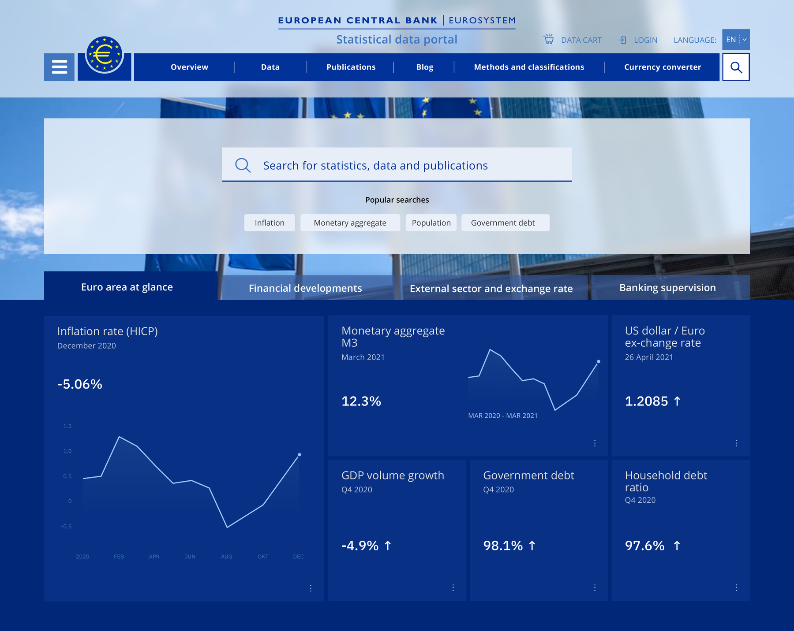
Project overview
The European Central Bank transitioned from its long-standing Statistical Data Warehouse (SDW) to the more advanced ECB Data Portal (EDP) — a significant upgrade in user experience while preserving the same underlying data structures, time-series keys, dataset identifiers, and codifications the SDW's expert users already relied on. That constraint shaped everything: this wasn't a from-scratch redesign, it was making a genuinely complex, trusted data system approachable to a much wider audience without breaking what already worked for the experts who used it daily.
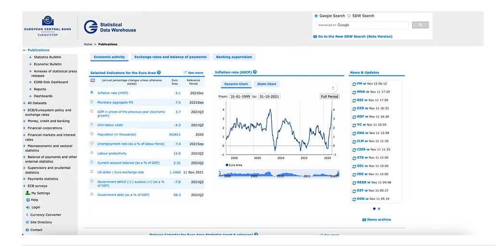
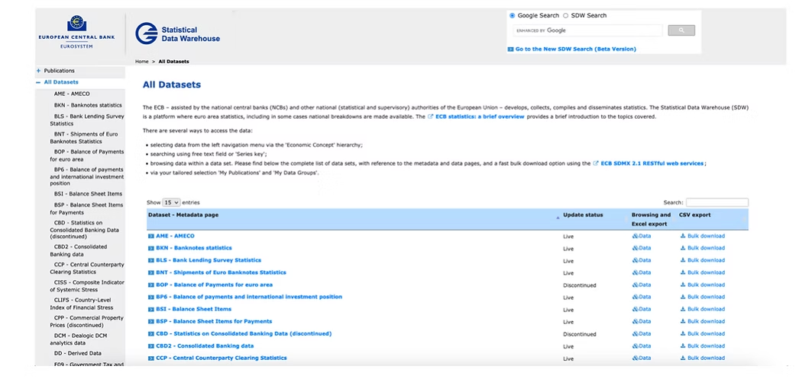
The legacy SDW portal: a dense indicator table and chart bolted onto the homepage (left), and every dataset dropped into one flat, unfiltered table (right) — the two problems the redesign had to solve first.
Objectives
- Streamline data access: simplify the process of finding and retrieving statistical data.
- Enhance user experience: design an interface that works for both novice and expert users.
- Improve data visualization: integrate interactive tools for better data interpretation.
- Ensure accessibility: comply with accessibility standards for inclusive usage.
- Facilitate personalization: let users customize their data interaction experience.
Design strategy
The mission was to transform a complex statistical repository into an accessible, intuitive, engaging platform for a genuinely diverse user base — policymakers, analysts, journalists, researchers, and the general public — without compromising the integrity and reliability of the data itself. Several workstreams anchored that strategy, each detailed below: wireframing and information architecture, search, account personalization, responsive and accessible design, interactive data visualization, editorial content, and the agile process that held it all together.
Wireframing & Prototyping
The business had an existing style guide designers had to work within — the real design leverage was in deciding component choice, page layout, and information structure to improve the browsing experience. The process started by gathering input on Mural, where the business and IBM laid out what each page needed to contain, alongside release details and information architecture.
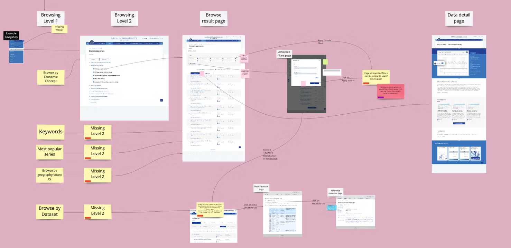
Mapping the browsing journey on Mural with the business and IBM — Level 1 and Level 2 navigation, the results page, and the data detail page, with red-flagged notes marking screens that still needed a visual or a decision.
Low-fidelity wireframes built in the existing style guide's components — two homepage module options, the Tags browse page in its default and expanded states, a results page built around bulk actions, and a reusable alternating-block content template.
Information Architecture & Navigation
To address dataset discoverability, we overhauled the portal's information architecture:
- Hierarchical navigation: a structured system organized by economic concepts and report types, for intuitive browsing.
- Enhanced search: a robust search engine with advanced filtering, so users could locate datasets efficiently instead of hunting.
- Personalized dashboards: users could save favorite datasets, set up notifications, and manage data carts.
These changes streamlined the user journey — reducing friction and improving overall satisfaction.
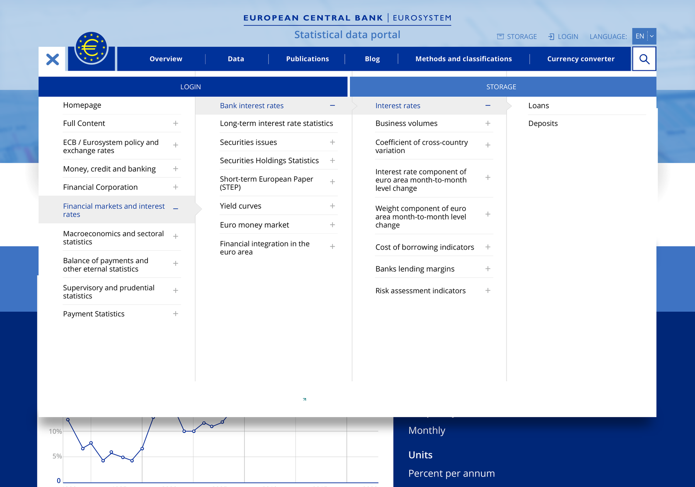
The header's navigation menu, expanded — four levels deep (Financial markets and interest rates → Bank interest rates → Interest rates → Loans/Deposits), revealed one column at a time so the full depth of the site never has to be shown at once.
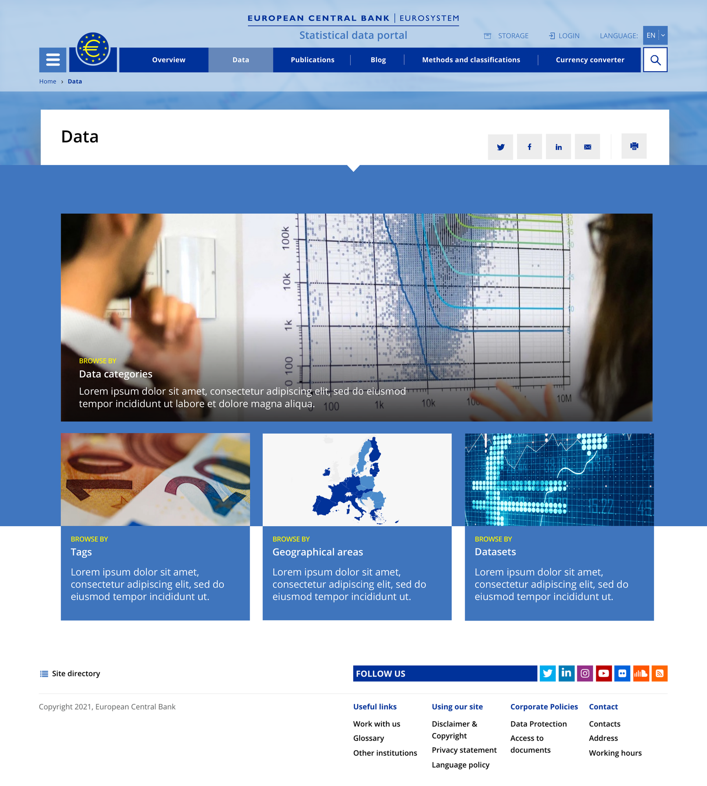
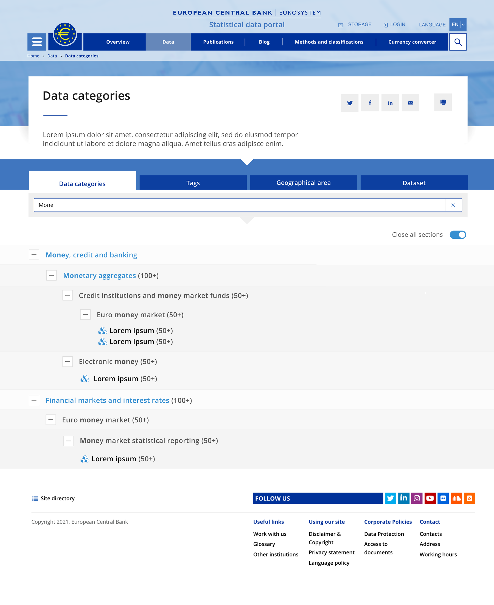
Search Experience
The original design strategy described this as "enhanced search functionality" — one line in a much bigger plan. In practice it became one of the most detailed parts of the redesign, because for a portal with this much data, search isn't a feature bolted onto navigation — it's how most users actually find what they came for.
The search bar sits persistently in the header and opens straight into popular searches before a user types anything — Inflation, Monetary aggregate, Population, Government debt — giving people a starting point instead of a blank box. Once typing begins, the system tolerates typos rather than failing silently: searching "Infalton" surfaces a "Do you mean: Inflation" correction alongside ranked results, the most relevant hits (Economic Bulletin, Inflation rate HICP), and the user's own recent queries. That combination — forgiving input, ranked relevance, and personal history — is what turns a search box into something people trust enough to use as their primary way into the data, rather than a fallback when navigation fails them.
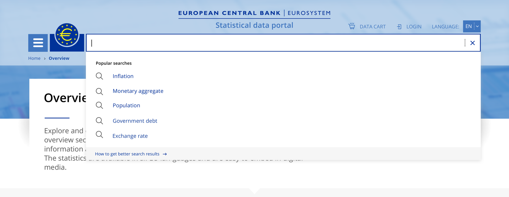
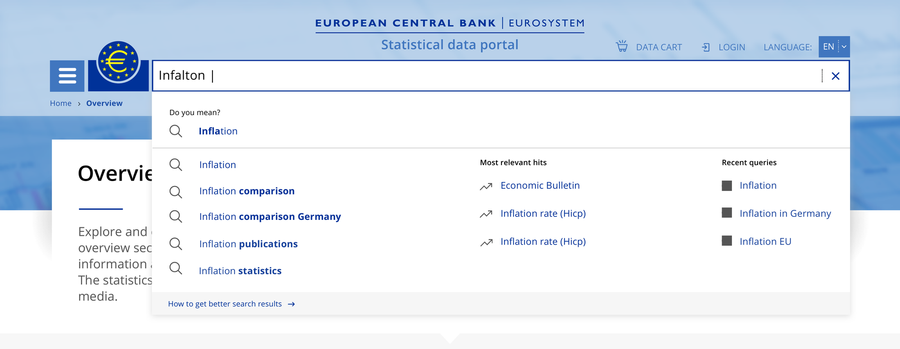
Left: the empty-state search, surfacing popular queries as a starting point. Right: typo-tolerant search mid-query, correcting "Infalton" to "Inflation" while showing ranked results and recent history.
Account, Login & Personalization
This is where the "Personal Accounts" pillar from the design strategy actually lives — saving favorite datasets, notifications, and data carts all depend on a login system that's trustworthy and forgiving when things go wrong. Rather than treat login as a solved, boring problem, we designed for the full path: a first-time login, a wrong password, a forgotten password, and a new registration — each with its own validation and recovery state, not just a single happy-path mockup.
Responsive & Accessible Design
Recognizing growing mobile usage, we prioritized a responsive approach:
- Mobile optimization: seamless functionality across devices, with content adapting to screen size.
- Accessibility compliance: adherence to WCAG guidelines, including keyboard navigation and screen reader compatibility.
This commitment to inclusivity expanded who could actually use the portal. The same homepage — indicator dashboard, latest updates, news, popular topics — carries across all three breakpoints without cutting content, only reflowing how it's presented: a tabbed 3-across grid on desktop becomes a 2×2 grid with a dropdown selector on tablet, then a single-column swipeable carousel on mobile.
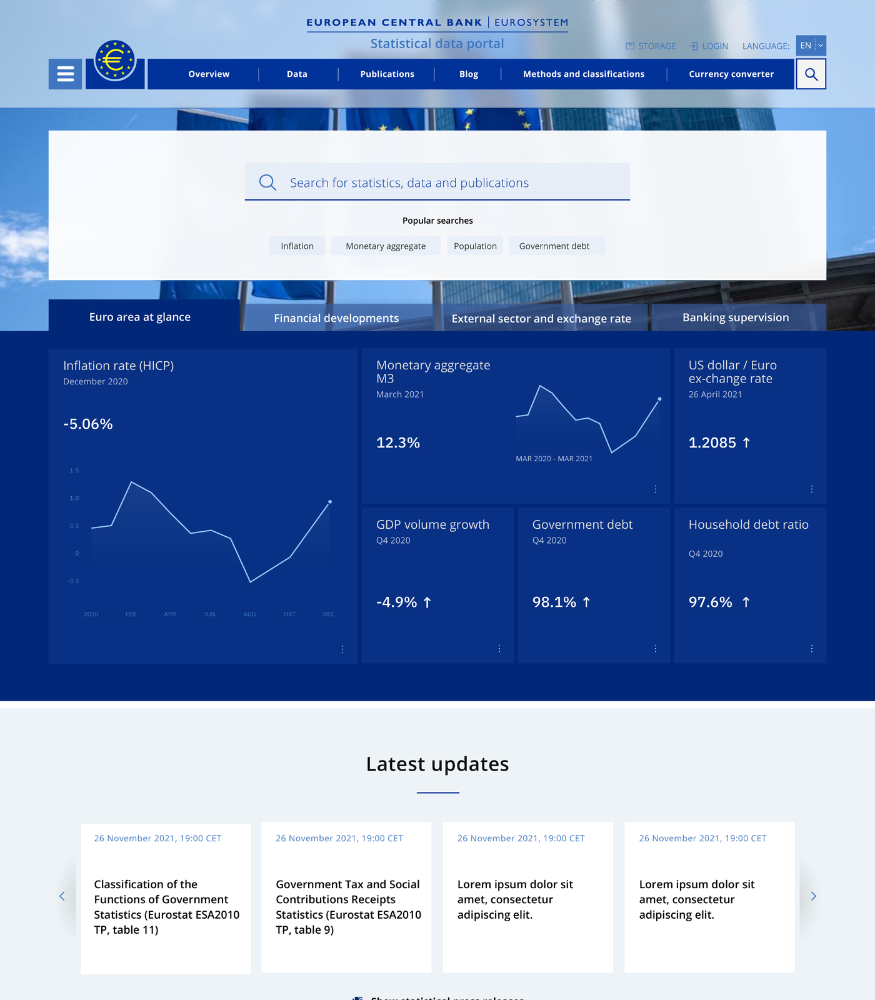
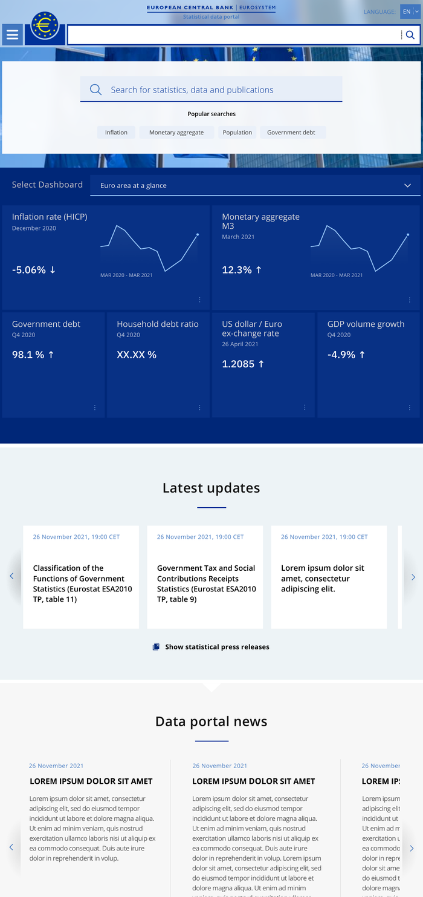
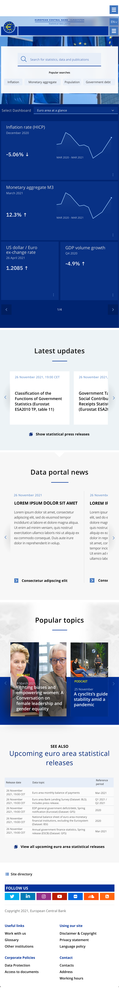
Interactive Data Visualization
To serve both expert and non-expert users, we integrated advanced visualization tools:
- Dynamic charts and graphs: customizable visual representations users could interact with directly.
- Comparative analysis tools: compare datasets across different timeframes and regions.
- Export options: download visualizations for offline analysis or presentation.
These tools demystified complex data, making it more approachable and genuinely actionable.
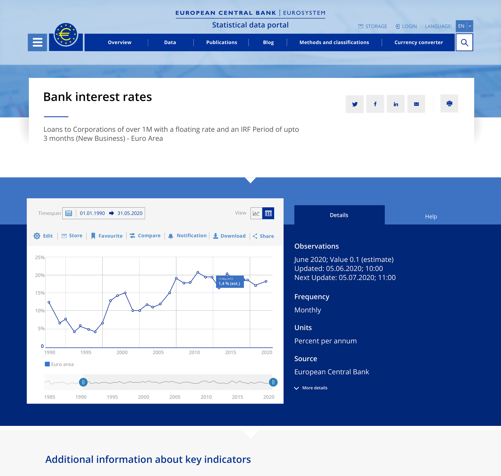
Every dataset opens into a detail view built around the chart itself — compare, favourite, get notified on updates, or export, all without leaving the page.
Editorial Content & Community Engagement
Data without context is easy to misread, so we enriched the portal editorially:
- Data stories and articles: narratives interpreting data trends, giving insight into economic developments.
- User feedback mechanisms: rating and commenting on datasets, building a sense of community and continuous improvement.
- Social media integration: stronger presence on platforms like Twitter and LinkedIn for broader dissemination.
Agile Development & Continuous Improvement
The team worked in an agile methodology to stay flexible and responsive:
- Iterative design cycles: regular sprints with user testing at each stage, allowing timely adjustments based on feedback.
- Cross-functional collaboration: close coordination between designers, developers, and stakeholders to stay aligned and streamline workflows.
- Performance monitoring: analytics tools tracking user behavior to inform ongoing enhancements and feature prioritization.
UI Designs
Three finished screens, each solving a different problem: bulk access to raw data, filtering a results set down to what matters, and combining multiple filter dimensions without losing track of what's applied.
Live today
The redesign didn't stop at the mockup stage — it shipped. This is a walkthrough of the live ECB Data Portal at data.ecb.europa.eu: the homepage indicator dashboard, the same progressive-disclosure mega-menu shown earlier in this case study, and the editorial blog, all running in production.
Screen recording of the live site — homepage dashboard, global navigation, and the ECB Data Blog.
Learnings
Clear communication and collaborative workflows were as important to this project's success as the design decisions themselves.
Design Iteration & Feedback Integration
The design process began with co-design sessions with stakeholders to gather insight and feedback, which shaped the initial screen designs against identified user needs and business goals. Designs were then uploaded to InVision, letting stakeholders leave prompt, contextual feedback directly on the work — enabling fast, informed iteration. When a discussion needed deeper exploration, we scheduled dedicated meetings with business stakeholders rather than letting it stall in comment threads.
Ensuring Development Alignment & Sprint Closure
Approaching the end of each sprint, we produced comprehensive design specification documents detailing design rationale, user interactions, and technical requirements. These served three purposes: knowledge transfer to developers, a review point for stakeholder validation, and a place to resolve open questions before they became misinterpretations in development. That discipline gave the development team a solid foundation to implement designs faithfully, and made sprint closure far smoother.
Conclusion
Redesigning the ECB Data Portal meant engaging deeply with a genuinely diverse user base — policymakers, analysts, researchers, and the general public — to find the real pain points and opportunities hiding inside a system that already worked, just not for everyone. The result: streamlined navigation, advanced search, interactive visualizations, and personalization, all built without disrupting the data integrity expert users depended on. It's a solid example of how thoughtful UX can bridge the gap between a complex, trusted data system and a genuinely user-friendly interface — without asking either side to compromise.